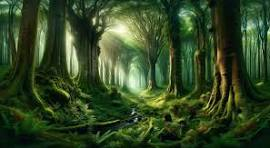

Em um dia Maria estava limpando a estante antiga em um porão quando ela achou um jogo e começou a jogar
Você começa sua jornada na trilha da floresta, subindo foi a procura da primeira pista.
encontramos a pista e conseguimos passar de nível, entramos na cidade de doces.
infelizmente não foi dessa vez, boa sorte na próxima
Maria foi em direção a cachoeira.
Maria foi em direção a cachoeira.entramos no jardim dos únicornios, um deles entregou uma papel com enigma(há um pato entre 2 patos, um pato atrás de um pato e um pato na frente de outro pato.de quantos patos estamos falando?)
muito bem, por chegar no fim do jogo com sua ajuda maria conseguiu voltar a sua vida real.